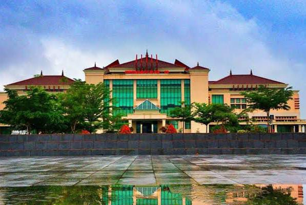
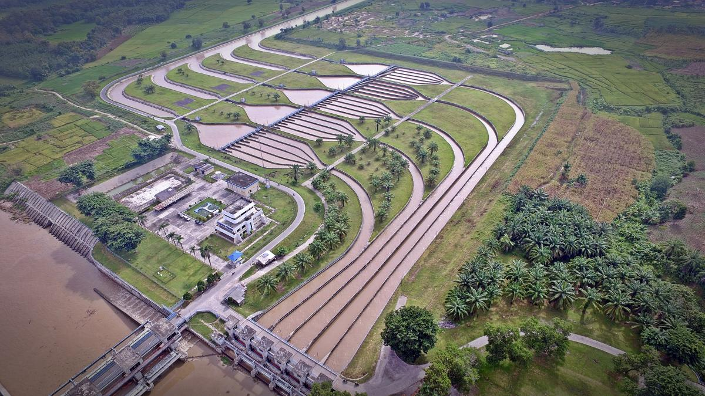

Sejarah

Nama Kabupaten Ogan Komering Ulu diambil dari nama dua sungai besar yang melintasi dan mengalir di
sepanjang wilayah kabupaten OKU, yaitu sungai Ogan dan Sungai Komering. Berdasarkan sejarah, sesuai
dengan kesepakatan yang tertuang dalam Peraturan Daerah Kabupaten Ogan Komering Ulu Nomor 9 Tahun 1997
tanggal 20 Januari 1997, Tahun 1878 ditetapkan sebagai tahun kelahiran nama Ogan Komering Ulu.
Sedangkan berdasarkan peraturan perundang-undangan, Kabupaten Ogan Komering Ulu terbentuk dengan
keluarnya Undang-undang Nomor 11 Tahun 1950 tentang Pembubaran Negara Bagian Sumatera Selatan dan
Peraturan Pemerintah Penganti Undang-undang Darurat Nomor 3 Tahun 1950 tentang Pembentukan Daerah
Sumatera Selatan menjadi Propinsi didalam Negara Republik Indonesia
Geografis

OKU Timur memiliki topografi yang beragam, mulai dari dataran rendah hingga perbukitan. Kabupaten ini terletak di
bagian timur Provinsi Sumatera Selatan, berbatasan dengan Kabupaten OKU Induk di barat, Kabupaten Ogan Ilir di
utara, dan Provinsi Lampung di selatan.
Sungai Komering adalah sungai utama yang melintasi wilayah OKU Timur, yang berperan penting dalam irigasi pertanian.
Dengan luas wilayah sekitar 3.370 km², OKU Timur memiliki iklim tropis yang mendukung aktivitas pertanian.
Wisata
OKU Timur menawarkan beberapa destinasi wisata alam dan budaya yang menarik. Wisata sungai, danau, serta tradisi
masyarakat lokal menjadi daya tarik tersendiri.
Danau Ranau
Lokasi
Meski sebagian besar berada di wilayah OKU Selatan, Danau Ranau juga dapat diakses dari OKU Timur. Danau ini
menawarkan pemandangan yang indah dengan latar belakang Gunung Seminung. Wisatawan dapat menikmati suasana danau,
memancing, atau berperahu.
Kondisi
Tradisi Cempako
Lokasi
Tradisi adat Cempako adalah salah satu warisan budaya masyarakat Komering di OKU Timur. Tradisi ini biasanya
dilakukan pada acara-acara adat seperti pernikahan atau syukuran, di mana masyarakat berkumpul untuk merayakan
kebersamaan.
Kondisi